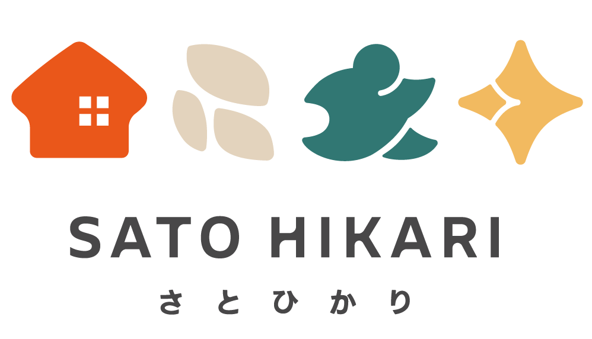

01
町の表情から、百年前の暮らしを読む
虎尾・昭和まち歩き
日本統治時代の面影が残る市街地を歩き、古い建物、市場、製糖の町として育った虎尾の日常をたどります。
- 約3〜6時間
- 徒歩中心
- 歴史・建築・ローカルフード

OUR JOURNEYS
歴史を見るだけでなく、土地の人、食、音、記憶までつなぐ旅です。
町の表情から、百年前の暮らしを読む
日本統治時代の面影が残る市街地を歩き、古い建物、市場、製糖の町として育った虎尾の日常をたどります。
住まい、戦争、移住の記憶にふれる
空軍の家族が暮らした眷村を、建物だけでなく人の記憶や食卓から紹介。防空施設やVR体験も組み合わせられます。
今も働く糖業鉄道を、物語とともに
列車を待つ時間も旅の一部。サトウキビ畑、製糖工場、建国眷村をつなぎ、台湾の砂糖産業の過去と現在を体感します。
ABOUT SATOHIKARI
村光（Satohikari）は、雲林・虎尾を拠点に、地域の歴史と今の暮らしを伝えるガイドチームです。観光名所を巡るだけでなく、土地の背景を日本語で丁寧に読み解きます。
有名な場所だけではなく、町に残る小さな記憶や地域の人の声にも光をあてること。それが「村光」という名前に込めた思いです。一人でも参加できます。行き先や日程が決まっていなくても、お気軽にご相談ください。
RESERVATION & INQUIRY
希望がまだ曖昧でも構いません。送信後、内容を確認して日程とルートをご提案します。
BEFORE YOU GO
はい。日本語でご案内します。中国語を学びたい方には、簡単な台湾華語を交えた交流型の案内も可能です。
はい、一人でも参加できます。公開募集の日程への参加も、ご希望に合わせた旅の相談も歓迎しています。
徒歩、路線バス、貸切車など、人数と行程に合わせてご案内します。
小雨は内容を調整して開催できます。安全に影響がある場合は、事前に代替案をご連絡します。